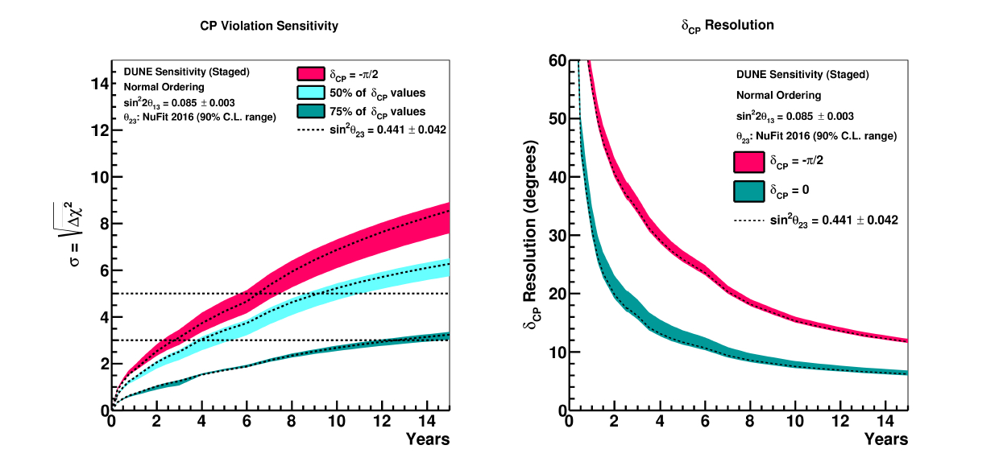
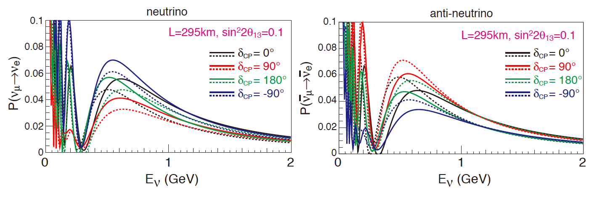
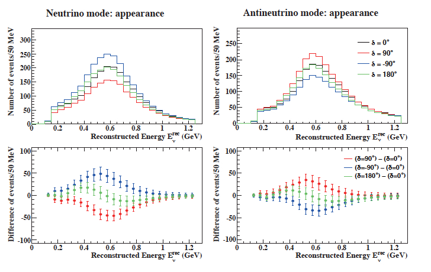

Show code cell source
import orbit_nb
Neutrino Oscillations: Experimental Evidence#
Theory foundations (two-family oscillations, MSW matter effects, PMNS matrix) are covered in Neutrino Oscillations: Theory and Foundations.
Show code cell source
# general imports
%matplotlib inline
%reload_ext autoreload
%autoreload 2
# numpy and matplotlib
import numpy as np
import pandas as pd
import matplotlib.pyplot as plt
import scipy.stats as stats
import scipy.constants as units
plt.style.context('seaborn-colorblind');
import time
print(' Last version ', time.asctime() )
SBL Reactor Experiments. The \(\theta_{13}\) angle#
Short Base Line experiments, searching for \(\nu_e \to \nu_e\) disappearance, with \(E\) in \(1\) MeV and distance \(1\) km, are sensitive to \(\theta_{13}\) in the \(\Delta m^2_A\) range.
Daya Bay Experiment#

6 reactors 2.9 GW, 6 detectors: 2 near (470 m, 576 m), one far (1648 m)
layer detectors: LS with Gd, LS free of Gd, Veto (pure water), 160 tons
calibrated with radioactive sources: \(^{137}\)Cs, \(^{60}\)Co,
|

Observation of oscillation with \(\theta_{13}\), Daya Bay [26], in 2012.
|
|


Daya Bay results 2018 [27]
Reno Experiment#
|
|


6 reactors (~2.8 GW), near (294 m) and far detector (1383m)
layers: LS + Gd, LS + Veto (pure water), 15.2 ton

Reno results 2018 [28]
DoubleCHOOZ#

6 reactors (~2.8 GW), a far detector (1050m)
layers: LS + Gd, LS + Veto (pure water)
|

Double Chooz 2019 [29]
Latest summary (Neutrino 2024)
|

Exercise: Daya Bay and the reactor determination of \(\theta_{13}\)
At short baselines (\(L\sim 1\)–2 km, \(E\sim 3\) MeV), only the fast atmospheric oscillation contributes. The \(\bar\nu_e\) survival probability reduces to: $\( P(\bar\nu_e \to \bar\nu_e) \simeq 1 - \sin^2 2\theta_{13}\,\sin^2\!\left(1.267\,\frac{\Delta m^2_{31}\,L}{E}\right) \)$
Questions:
At Daya Bay’s far detector (\(L = 1.648\) km) and \(E = 4\) MeV, compute \(\phi_{31}\). Is the experiment near the first oscillation maximum (\(\phi_{31} = \pi/2\))? At what energy would \(\phi_{31} = \pi/2\) exactly?
Daya Bay measured \(R_{\rm far/near} = 0.944\pm0.007\). Approximating \(\sin^2\phi_{\rm far} \approx \sin^2(1.267\,\Delta m^2_{31}\,L_{\rm far}/\langle E\rangle)\), extract \(\sin^2 2\theta_{13}\) and compare with NuFit-6.0.
Using
oscillations.osc_prob_3famwith NuFit-6.0 parameters, plot \(P(\bar\nu_e\to\bar\nu_e)\) vs \(E\in[1,10]\) MeV at \(L = 1.648\) km. Superimpose the two-family approximation \(P\simeq 1 - \sin^2 2\theta_{13}\sin^2\phi_{31}\). How large is the solar correction at this baseline?
Long Base Line Experiments : \(\delta\)-CP and mass hierarchy#
Long Base Line Experiments, searching for \(\nu_\mu \to \nu_e\) and \(\bar{\nu}_\mu \to \bar{\nu}_e\) are sensitive to \(\theta_{13}, \; \delta\) and the mass hierarchy.
The propagation is affected by the matter effects in the mantle of the Earth.
This oscillation is a second order oscillations and to be observed required larger massive detector and very intense neutrino fluxes.
List of Long Base Line Experiments#
|

The oscillation probability for LBL experiments [30]:
Where:
The first term is sensitive to mass hierarchy. \(V_e\) changes sign depending on \(\nu(\bar{\nu})\) oscillations.
The second term is sensitive to the mass hierarchy and the \(\delta\)-CP phase.
But the second term is suppressed by \(J\) with \(\sin 2 \theta_{13}\).
To observe both effects it is better to have several experiments with different ranges of energies and distances.
NOvA#
\(\nu_\mu\) NuMI beam from Fermilab to near Ash River, MN, 810 km. Near detector at 1 km.
Detector is 14.5 mrad off-axis. The \(\nu\) E peaks at 2 GeV.
14 k ton detector with planes of plastic PVC cells in vertical and horizontal orientation filled with liquid scintillator.
NOvA started operation in 2014 with \(\nu_\mu\) beam and since 2016 with \(\bar{\nu}\).

NOvA construction timelapse movie
NOvA results on \(\nu_\mu (\bar{\nu}_\mu)\) disappearance
NOvA is sensitive to the atmospheric oscillations regime, with the \(\nu_\mu \to \nu_\mu\) (and anti-neutrinos) disappearance channels
Notice that there is an ambiguity in which octant \(\theta_{23}\) is!
|
|
Energy distribution (Neutrino 2024) |
NOvA results 2021 [31] |


The main goal of NOvA is CP violation and the hierarchy problem in the \(\nu_\mu \to \nu_e\) (and anti-neutrinos) appearance channels.
|

NOvA results 2021 [31]
|

NOvA results 2021 [31]
TAUP 2019 conference |
ICHEP 2021 |
NOvA conference results: TAUP 2019, ICHEP 2022 |
NOvA neutrino 2024 |
Bayes posterior probability |
NOvA conference results: Neutrino 2024
NOvA: 10-year complete analysis (September 2025)#
With double the neutrino-mode exposure relative to the previous analysis, NOvA published the most precise oscillation-parameter measurement from a single LBL experiment [42]:
Mass ordering: mild preference for NH (Bayes factor 2.4, NH posterior probability \(\sim 70\%\)).
\(\delta_{\rm CP}\): results compatible with previous analyses; CP conservation cannot yet be excluded.
T2K#

T2K is less sensitive to matter effects but has some sensitivity to \(\delta\)-CP in \(\nu_\mu \to \nu_e\) and \(\bar{\nu}_\mu \to \bar{\nu}_e\) oscillations.
|

T2K PID (2019) [32]
T2K \(\nu_e, \bar{\nu}_e\) appearance, (2020) [32] |
\(\sin^2 \theta_{23}\) vs \(\delta\) CP |
|
T2K ‘elipses’ and CP posterior probability |

Results from Neutrino 2024
T2K + Super-Kamiokande: joint analysis (May 2024)#
First combination of SK atmospheric data (3244 days) with T2K accelerator data (\(19.7 \times 10^{20}\) POT in \(\nu\) mode) [43]:
Exclusion of CP conservation (\(J_{\rm CP} = 0\)) at 1.9\(\sigma\) in the combined analysis (vs. 1.5\(\sigma\) with T2K alone).
Preference for normal ordering.
Mild octant tension: SK prefers the lower octant, T2K the upper one — the combination weakens the octant sensitivity.
T2K + NOvA: first joint analysis (October 2025)#
The combination of the two major LBL experiments, published in Nature in October 2025 [44], is the most complete LBL analysis to date:
10 years of T2K + 6 years of NOvA of neutrino and antineutrino data.
The uncertainty on \(|\Delta m^2_{32}|\) falls below 2% (world-best precision):
3\(\sigma\) interval for \(\delta_{\rm CP}\):
Normal Ordering: \(\delta_{\rm CP} \in [-1.38\pi,\; 0.30\pi]\)
Inverted Ordering: \(\delta_{\rm CP} \in [-0.92\pi,\; -0.04\pi]\)
CP violation: if the ordering were inverted (IO), the data provide evidence for CP violation in the leptonic sector.
Mass ordering: no strong preference for either ordering.
CP posterior probability (NOvA and T2K) |
Results from Neutrino 2024
CP posterior probability (NOvA and T2K) |
In NO both experiments show differences, but in IO, the combination improves the result!
Results from Neutrino 2024
Exercise: LBL appearance probability and the CP asymmetry
The CP asymmetry in the \(\nu_\mu\to\nu_e\) appearance channel is: $\( \mathcal{A}_{\rm CP} = \frac{P(\nu_\mu\to\nu_e) - P(\bar\nu_\mu\to\bar\nu_e)}{P(\nu_\mu\to\nu_e) + P(\bar\nu_\mu\to\bar\nu_e)} \)\( It is proportional to \)\sin\delta_{\rm CP}\( and to the Jarlskog-like factor \)J \propto \sin 2\theta_{12}\sin 2\theta_{13}\sin 2\theta_{23}\(. It is also modified by matter effects, which mimic a non-zero \)\delta_{\rm CP}$.
Questions:
Using
oscillations.osc_prob_3fam, compute \(P(\nu_\mu\to\nu_e)\) and \(P(\bar\nu_\mu\to\bar\nu_e)\) at T2K kinematics (\(L = 295\) km, \(E = 0.6\) GeV) for \(\delta_{\rm CP} = -90°\) and \(\delta_{\rm CP} = +90°\). Which value gives the larger neutrino appearance probability? Compute \(\mathcal{A}_{\rm CP}\) in each case.Compute \(\mathcal{A}_{\rm CP}(\delta_{\rm CP})\) for \(\delta_{\rm CP}\in[0°,360°]\) at T2K (\(L=295\) km, \(E=0.6\) GeV) and NOvA (\(L=810\) km, \(E=2\) GeV). Plot both curves and explain why \(|\mathcal{A}_{\rm CP}|\) is larger at NOvA despite the smaller Jarlskog factor (hint: matter effects at longer baseline).
Plot the bi-probability diagram — the parametric curve \((P(\nu_\mu\to\nu_e),\,P(\bar\nu_\mu\to\bar\nu_e))\) as \(\delta_{\rm CP}\) varies from \(0°\) to \(360°\) — for T2K and NOvA, for both NH (solid) and IH (dashed). Mark the point \(\delta_{\rm CP} = -90°\). This “Cabibbo ellipse” visualises how the two experiments break the hierarchy–\(\delta_{\rm CP}\) degeneracy.
Neutrino Mixing Matrix Parameters. Global fits#
There is an international effort to combine the experimental results in the framework of different neutrino scenarios.
This is the web page of NuFit group
NuFit-6.0 (2024) — three-flavour global fit [33], updated with T2K, NOvA, Daya Bay, RENO, SK-atm, IceCube data and the first JUNO results. The NuFit-6.0 (NH) values are the default values in the oscillation widgets of this notebook.
Next-generation oscillation experiments#
The current experiments T2K and NOvA have produced pioneering results on \(\delta_{\rm CP}\) and the mass ordering. Their joint analysis (Nature 2025) is the current state of the art.
The future experiments JUNO (already running), DUNE (~2031) and HyperKamiokande (~2028) will address the precise determination of the mass ordering and CP violation.
SBL: JUNO (2025 – )#
The Jiangmen Underground Neutrino Observatory (JUNO), China, is a 20 kton multi-purpose liquid-scintillator detector, located 52.5 km from the Taishan and Yangjiang nuclear power plants (17.4 GW\(_{\rm th}\) combined).
Excellent energy resolution: \(\sigma_E/E \simeq 3\%/\sqrt{E/{\rm MeV}}\) thanks to \(>\)45,000 PMTs.
Detects reactor \(\bar{\nu}_e\) via IBD (\(\bar{\nu}_e + p \to e^+ + n\)), as well as solar neutrinos, geo-neutrinos and supernova neutrinos.
Main goals:
Determination of the mass ordering at \(\geq 3\sigma\) (after ~6.5 years of data).
Measurement of \(\Delta m^2_{21}\) and \(\sin^2 \theta_{12}\) with \(<1\%\) precision.
Current status:
Liquid-scintillator filling completed in 2025.
Official start of data taking: 26 August 2025.
First results published: November 2025 (only 59.1 effective days) [38].
|
||
location |
detector scheme |
detector image |

JUNO [34]
JUNO first results (November 2025)#
With only 59.1 effective days of data, JUNO published the first measurement of solar oscillation parameters with a single large-mass detector at medium baseline [38]:
Improvement by a factor of \(\sim 1.6\) in precision relative to all previous combined data. Post-JUNO global fit [39]:
Outlook for the mass ordering:
JUNO needs about 6–7 years of data to reach \(3\sigma\) sensitivity to the ordering. The key is to resolve the interference pattern between \(\Delta m^2_{31}\) and \(\Delta m^2_{32}\) in the \(\bar{\nu}_e\) spectrum.
Expected spectrum with 6 years of data [34] |
import oscillations
oscillations.plot_juno_spectrum()
The solar tension#
Reactor experiments (KamLAND, JUNO) and solar neutrino experiments (SNO, SK) measure \(\Delta m^2_{21}\) in different ways:
Reactor: measure the \(\bar{\nu}_e \to \bar{\nu}_e\) oscillation frequency directly.
Solar: measure the adiabatic MSW transition \(\nu_e \to \nu_2\) and the survival probability in the vacuum–matter transition region (Mikheyev–Smirnov–Wolfenstein resonance).
Current values (2026):
Source |
\(\Delta m^2_{21}\) [\(10^{-5}\) eV\(^2\)] |
|---|---|
KamLAND (reactor) |
\(7.49 \pm 0.20\) |
JUNO (reactor, 2025) |
\(7.50 \pm 0.12\) |
Solar (SNO + SK) |
\(\sim 6.9\) |
Global post-JUNO |
\(7.48 \pm 0.10\) |
The discrepancy is \(\sim 1.5\sigma\). If it persists with more JUNO statistics, it could hint at new physics (non-standard interactions, NSI, or variations in the solar density). JUNO will also directly measure solar neutrinos, allowing a comparison of both measurements with the same detector.
Exercise: JUNO and the reactor spectrum interference pattern
At \(L = 52.5\) km, the \(\bar\nu_e\) spectrum carries two oscillation frequencies. The survival probability at leading order in \(\theta_{13}\) is: $\( P_{ee} \approx 1 - \cos^4\theta_{13}\sin^2 2\theta_{12}\sin^2\!\frac{\Delta m^2_{21} L}{4E} - \sin^2 2\theta_{13}\!\left(\cos^2\theta_{12}\sin^2\phi_{31} + \sin^2\theta_{12}\sin^2\phi_{32}\right) \)\( NH and IH differ in the sign of \)\Delta m^2_{31}$, which shifts the relative phase of the two fast oscillations — the key to JUNO’s mass ordering determination.
Questions:
At \(E = 5\) MeV and \(L = 52.5\) km, compute \(\phi_{21}\), \(\phi_{31}\) and \(\phi_{32}\) with NuFit-6.0 parameters for NH and IH. How many complete fast-oscillation cycles fit in the energy window \(E\in[2,8]\) MeV?
Use
oscillations.plot_juno_spectrumto switch between NH and IH. In which region of the spectrum (\(E \lesssim 4\) MeV or \(E\gtrsim 4\) MeV) do the two orderings show the largest difference? Explain qualitatively in terms of the interference condition \(\phi_{31} \approx \phi_{32} + n\pi\).JUNO’s energy resolution is \(\sigma_E/E \simeq 3\%/\sqrt{E/\mathrm{MeV}}\). Using
oscillations.osc_prob_3fam, compute \(P_{ee}(E)\) over \(E\in[2,8]\) MeV and convolve it with a Gaussian of width \(\sigma_E(E)\). Plot both the ideal and smeared spectra. Verify that the fast oscillations survive the smearing.
LBL: DUNE (~2031 – )#
35 kt active LArTPC detector (Phase I) at Sanford Underground Research Facility (SURF), South Dakota, 1300 km from the LBNF/PIP-II neutrino beam at Fermilab.
|
|
Experiment layout |
Appearance probability |

Measures \(\nu_\mu (\bar{\nu}_\mu)\) disappearance and \(\nu_e(\bar{\nu}_e)\) appearance at \(E \sim 3\) GeV.
Expected to collect \(\sim 10^{3}\) \(\nu_e(\bar{\nu}_e)\) and \(\sim 10^{4}\) \(\nu_\mu(\bar{\nu}_\mu)\) per year at full power.
Broad physics programme: supernova neutrinos, proton decay…
LBNF beam at 1.2 MW (Phase I) → 2.4 MW (Phase II), thanks to the new superconducting linac PIP-II.
Far detector at 1.5 km depth under SURF (South Dakota).
Phase I: 2 LArTPC modules of 17 kt each (35 kt active / 70 kt total):
FD1: Horizontal Drift TPC (HD-TPC), based on ProtoDUNE-HD.
FD2: Vertical Drift TPC (VD-TPC).
Current status (2025-2026):
Cavern excavation at SURF completed in 2024.
Cryostat steel shipped from CERN; underground installation from early 2026.
2×2 ND-LAr prototype: first accelerator neutrinos detected in August 2024 at Fermilab (LArPix 3D technology) [41].
ProtoDUNE-HD (CERN) completed test-beam data taking in 2024; ProtoDUNE-VD in 2025.
High-power physics start expected: ~2030-2031 [36].
Two 1:20-scale prototypes operated at CERN:
ProtoDUNE-HD (Single-phase): ionisation charge drifted horizontally in LAr and read out on wires. Drift length 3.5 m, field 500 V/cm. Took test-beam data in 2022 and 2024 [35].
ProtoDUNE-VD (Vertical Drift): ionisation charge drifted vertically with gas-phase amplification. Drift length 12 m. Took beam data in 2025.
Previous experience with ICARUS at LNGS
|

ICARUS event [35] (2011) of a \(\nu_\mu\) CC interaction (CERN CNGS beam to LNGS)
Currently two large LArTPC prototypes (ProtoDUNE) operating at CERN (2018-)
DUNE Phase I will consist of 2 LArTPC modules:
FD1 (Horizontal Drift): ionisation charge drifted horizontally, based on ProtoDUNE-HD (CERN). Test-beam data taking completed in 2024.
FD2 (Vertical Drift): ionisation charge drifted vertically. ProtoDUNE-VD completed data in 2025.
DUNE sensitivities to the mass ordering and \(\delta_{\rm CP}\) [36]:


DUNE report [36]
As a function of the Modules

DUNE report [36]

DUNE report [36]
HyperKamiokande (2028 – )#
|
|
Detector layout |
Excavated cavern |


{kind=link}
{kind=link}
{kind=link}
{kind=link}
{kind=link}
{kind=link}
{kind=link}
{kind=link}
{kind=link}
{kind=link}
{kind=link}
{kind=link}
{kind=link}
{kind=link}
{kind=link}
{kind=link}
{kind=link}
{kind=link}
{kind=link}
{kind=link}
{kind=link}
{kind=link}
{kind=link}
{kind=link}
{kind=link}
{kind=link}
{kind=link}
Construction status (2025-2026):
Excavation of the main cavern (330,000 m³ of rock) completed on 31 July 2025 — one of the largest artificial rock excavations.
Construction of the water tank (260,000 m³) and detector installation planned for 2025-2027.
Start of data taking: 2028 (no physics data yet).
Detector characteristics:
78 m tall, 74 m diameter → 260 kt of water (50 kt active for T2K, 186 kt active for HK).
More than 40,000 new high-quantum-efficiency PMTs (\(\times 2\) compared to SK) [37].
Factor \(8.5\times\) SuperKamiokande.
J-PARC beam:
T2K has been operating since December 2023 with an upgraded beam at 710–760 kW (+40% relative to previous operation), increasing the horn current from 250 kA to 320 kA [40].
Target for HK: 1.3 MW (expected ~2028), reducing the repetition period from 2.48 s to 1.16 s.
{kind=link}


HK Neutrino 2024 conference
{kind=link}

HK report (2018) [37]
{kind=link}
{kind=link}
HK report (2018) [37]

Draft preliminary
KM3NeT: ORCA and ARCA#
KM3NeT is a deep-sea Cherenkov neutrino telescope in the Mediterranean Sea, with two physics programmes sharing common technology (multi-PMT digital optical modules, DU strings):
Detector |
Location |
Depth |
Volume |
Energy range |
Physics goal |
|---|---|---|---|---|---|
ORCA |
Toulon, France |
2450 m |
~7 Mt |
3–100 GeV |
Atmospheric oscillations, mass ordering |
ARCA |
Sicily, Italy |
3500 m |
~1 km³ |
1 TeV – 1 PeV |
Astrophysical ν, point sources |
KM3NeT/ORCA — Atmospheric Oscillations and Mass Ordering#
ORCA detects atmospheric neutrinos in the 3–100 GeV range, where Earth-crossing neutrinos experience significant MSW matter effects. This creates an asymmetry between \(\nu_\mu\) and \(\bar{\nu}_\mu\) survival probabilities that depends on the mass ordering:
Normal ordering (NH): resonant enhancement of \(\nu_\mu\) disappearance for upgoing neutrinos at \(E \sim 5\text{--}10\) GeV
Inverted ordering (IH): resonant enhancement of \(\bar{\nu}_\mu\) instead
ORCA therefore provides a matter-effect-based measurement of the mass ordering, complementary to DUNE (beam, 1300 km) and JUNO (reactor, interference pattern).
Detector status and first results:
Full configuration: 115 detection units (DU) × 18 DOMs = 2070 optical modules
Physics run with partial detector (6 DU → 21 DU) since 2020
First oscillation measurement (2024, 6 DU, 433 days): \(\sin^2\theta_{23} = 0.51^{+0.12}_{-0.09}\), \(|\Delta m^2_{32}| = 2.35^{+0.71}_{-0.40}\times10^{-3}\) eV² — consistent with global fits [KM3NeT-ORCA]
Ordering sensitivity with full ORCA (6 years): \(> 3\sigma\)
Also sensitive to tau neutrino appearance (\(\nu_\mu \to \nu_\tau\)) and non-standard interactions
KM3NeT/ARCA — High-Energy Neutrino Astronomy#
ARCA targets astrophysical neutrinos at 1 TeV–1 PeV. Its key advantage over IceCube is sky coverage: being in the Northern Hemisphere, ARCA looks downward at the Galactic Centre and the Southern Sky, where IceCube has reduced sensitivity.
First detection of the Galactic diffuse emission component (2023) consistent with IceCube’s measurement
Point-source sensitivity improving with exposure; targets include blazars, starburst galaxies, SNRs
Combined ARCA + IceCube analyses provide full-sky coverage
IceCube: DeepCore, Upgrade and Atmospheric Oscillations#
IceCube at the South Pole (1 km³, 5160 DOMs, 1450–2450 m depth) includes dedicated sub-arrays for oscillation physics:
DeepCore#
8 denser strings at the centre of IceCube, with threshold \(\sim 5\) GeV. DeepCore measures \(\nu_\mu\) disappearance and \(\nu_\tau\) appearance in the 5–100 GeV atmospheric range:
\(\sin^2\theta_{23}\), \(|\Delta m^2_{32}|\) at precision comparable to MINOS/NOvA
Tau neutrino appearance: first astrophysical \(\nu_\tau\) detection (2020)
Sensitive to mass ordering via Earth-matter effects above 10 GeV
IceCube-Upgrade (~2026–2027)#
7 new strings with next-generation multi-PMT optical modules (mDOM, D-Egg) deployed in the DeepCore volume, lowering the threshold to \(\sim 1\text{--}2\) GeV:
Improved calibration of the full IceCube array
Precision \(\theta_{23}\) and \(\Delta m^2_{32}\) measurement competitive with T2K/NOvA
Enhanced sensitivity to \(\nu_\tau\) appearance and NC ratios
Pathfinder for IceCube-Gen2 (10 km³ target)
Astrophysical neutrino flux#
Result |
Value |
Reference |
|---|---|---|
Diffuse astrophysical flux (2013) |
\(E^{-2.5}\) power law, 60 TeV–10 PeV |
Science 342 (2013) |
First point source: NGC 1068 |
\(4.2\sigma\) |
|
Galactic plane emission |
\(4.5\sigma\) |
IceCube and KM3NeT together provide all-sky coverage for multi-messenger astrophysics, connecting neutrino sources with gamma-ray and gravitational-wave observations.
Summary and conclusions#
Neutrino oscillations are established with high precision in both the solar and atmospheric regimes.
Nobel Prize 2015 to T. Kajita (SK) and A. B. McDonald (SNO).
JUNO (running since August 2025): first results (Nov. 2025) with 59 days of data are already the world’s most precise measurements of \(\Delta m^2_{21}\) and \(\sin^2\theta_{12}\). The mass ordering determination is expected in ~6 years.
T2K and NOvA (running):
Individual NOvA analysis with 10 years of data (Sep. 2025): most precise measurement of \(|\Delta m^2_{32}|\) in a single experiment.
First joint T2K + NOvA analysis published in Nature (Oct. 2025): \(|\Delta m^2_{32}|\) with < 2% precision; evidence for CP violation if the ordering is inverted.
HyperKamiokande (excavation completed Jul. 2025, data from 2028): will address CP violation and the mass ordering with the largest statistics.
DUNE (~2031): 35 kt LArTPC experiment at 1300 km; first accelerator neutrino detection with the 2×2 prototype in Aug. 2024.
Open questions: absolute mass scale, Dirac or Majorana nature, CP violation in the leptonic sector, and the solar tension in \(\Delta m^2_{21}\).
References#
[1] B. Pontecorvo, Sov. Phys. JETP 6 (1957) 429; B. Pontecorvo, Sov. Phys. JETP 7 (1958) 172.
[2] B. Pontecorvo, Sov. Phys. JETP 26 (1968) 984.
[2] Z. Maki, M. Nakagawa and S. Sakata, Prog. Theor. Phys. 28 (1962) 870.
[3] B. Pontecorvo, Sov. Phys. JETP 26 (1968) 984.
[4] V. N. Gribov and B. Pontecorvo, Phys. Lett. B28 (1969) 493.
[5] J. N. Bahcall et al., Rev. Mod. Phys. 54, 767 (1982); N. Bahcall, A. M. Serenelli and S. Basu, Astrophys. J. 621, L85 (2005), arXiv:astro-ph/0412440.
[6] R. Davis, Jr., D. S. Harmer and K. C. Hoffman, Phys. Rev. Lett. 20, 1205 (1968).
[7] B. T. Cleveland et al., Astrophys. J. 496, 505 (1998).
[8] C. Pena-Garay and A. Serenelli (2008), [arXiv:0811.2424].
[9] J. N. Abdurashitov et al. (SAGE), J. Exp. Theor. Phys. 95, 181 (2002), [Zh. Eksp. Teor. Fiz.122,211(2002)], [arXiv:astro-ph/0204245].
[10] W. Hampel et al. (GALLEX), Phys. Lett. B447, 127 (1999).
[11] M. Altmann et al. (GNO), Phys. Lett. B616, 174 (2005), [hep-ex/0504037].
[12] J. N. Abdurashitov et al. (SAGE), Phys. Rev. C80, 015807 (2009), [arXiv:0901.2200].
[13] K. Abe et al. (Super-Kamiokande), Phys. Rev. D94, 5, 052010 (2016), [arXiv:1606.07538]
[14] N. Vinyoles et al., Astrophys. J. 835, 2, 202 (2017), [arXiv:1611.09867].
[15] Q. R. Ahmad et al. (SNO), Phys. Rev. Lett. 87, 071301 (2001), [arXiv:nucl-ex/0106015].
[16] Q. R. Ahmad et al. (SNO), Phys. Rev. Lett. 89, 011301 (2002), [arXiv:nucl-ex/0204008].
[17] B. Aharmim et al. (SNO), Phys. Rev. C88, 025501 (2013), [arXiv:1109.0763].
[18] B. Aharmim et al. (SNO), Phys. Rev. C72, 055502 (2005), [arXiv:nucl-ex/0502021].
[19] S. P. Mikheev and A. Yu. Smirnov, Sov. J. Nucl. Phys. 42 (1985) 913, Yad. Fiz. 42 (1985) 1441.
[20] G. Bellini et al., Borexino Collaboration, Phys. Rev. D 82 (2010) 033006; G. Bellini et al., Phys. Rev. Lett. 107 (2011) 141302; M. Agostini et al., BOREXINO Collaboration, Nature 562 (2018) 505.
[21] K. Eguchi et al. (KamLAND), Phys. Rev. Lett. 90, 021802 (2003), [hep-ex/0212021].
[22] T. Araki et al. (KamLAND), Phys. Rev. Lett. 94, 081801 (2005), [hep-ex/0406035];
[23] A. Gando et al. (KamLAND), Phys. Rev. D88, 3, 033001 (2013), [arXiv:1303.4667];
[24] Y. Fukuda et al. (Super-Kamiokande), Phys. Rev. Lett. 81, 1562 (1998), [hep-ex/9807003].
[25] Y. Ashie et al. (Super-Kamiokande), Phys. Rev. Lett. 93, 101801 (2004), [hep-ex/0404034].
[26] P. Adamson et al. (MINOS), Phys. Rev. Lett. 110, 25, 251801 (2013), [arXiv:1304.6335].
[26] F. P. An et al. (Daya Bay), Phys. Rev. Lett. 108, 171803 (2012), [arXiv:1203.1669].
[27] D. Adey et al. (Daya Bay), Phys. Rev. Lett. 121, 24, 241805 (2018), [arXiv:1809.02261]. 6th February, 2020
[28] G. Bak et al. (RENO), Phys. Rev. Lett. 121, 20, 201801 (2018), [arXiv:1806.00248].
[29] H. de Kerret et al. (Double Chooz) (2019), [arXiv:1901.09445].
[30] A. Cervera et al., Nucl. Phys. B 579 (2000) 17 [Erratum: Nucl. Phys. B 593 (2001) 731], [arXiv:hep-ph/0002108]; M. Freund, Phys. Rev. D 64 (2001) 053003, [arXiv:hep-ph/0103300]; E. K. Akhmedov et al., JHEP 0404 (2004) 078, [arXiv:hep-ph/0402175].
[31] M. A. Acero et al. (NOvA), Phys. Rev. Lett. 123, 151803 (2019), [arXiv:1906.04907]; M. A. Acero et al. (NOvA), Phys. Rev. D 106, 032004 (2022), [arXiv:2108.08219].
[32] K. Abe et al. (T2K), Nature 580, 339 (2020), [arXiv:1910.03887]; K. Abe et al. (T2K), Eur. Phys. J. C 83, 782 (2023), [arXiv:2303.03222].
[33] I. Esteban et al. (NuFit-6.0), JHEP 12 (2024) 216, [arXiv:2410.05380], www.nu-fit.org.
[34] F. An et al. (JUNO), J. Phys. G43, 030401 (2016), [arXiv:1507.05613].
[35] C. Rubbia et al., JINST 6, P07011 (2011), [arXiv:1106.0975].
[36] B. Abi et al. (DUNE), JINST 19 (2024), [arXiv:2312.03130]; DUNE Physics Report, [arXiv:2002.03005].
[37] K. Abe et al. (Hyper-Kamiokande), [arXiv:1805.04163]; K. Abe et al. (HK), Frontiers in Physics 12 (2024), [arXiv:2309.03009].
[38] A. Abusleme et al. (JUNO), First measurement of reactor antineutrino oscillations at JUNO (Nov. 2025), [arXiv:2511.14593].
[39] M. C. Gonzalez-Garcia et al., Updated bounds on (1,2) neutrino oscillation parameters after first JUNO results (Nov. 2025), [arXiv:2511.21650].
[40] T2K Collaboration, T2K enters a new phase (Jan. 2024), J-PARC press release.
[41] DUNE Collaboration, DUNE Phase II Detectors (2025), [arXiv:2412.14941].
[42] M. A. Acero et al. (NOvA), Precision measurement with 10 years of data (Sep. 2025), [arXiv:2509.04361].
[43] K. Abe et al. (T2K + SK), First joint oscillation analysis of SK atmospheric and T2K accelerator neutrino data (May 2024), [arXiv:2405.12488].
[44] T2K and NOvA Collaborations, Joint neutrino oscillation analysis from T2K and NOvA, Nature (Oct. 2025), [arXiv:2510.19888].